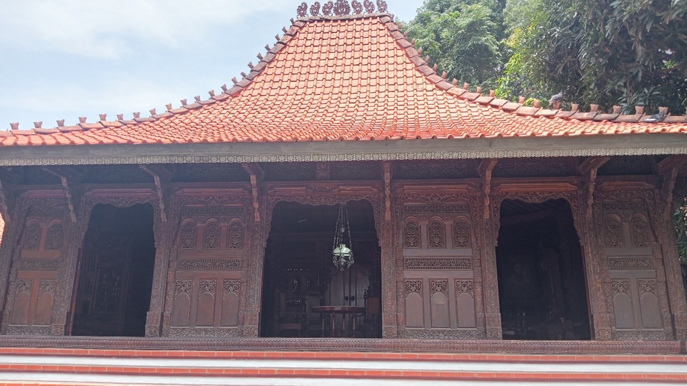

Sebelum mempelajari materi gradien, mari mengingat mengenai materi persamaan garis lurus yang telah kalian pelajari. Bagaimanakan bentuk persamaan garis lurus dan bagaimanakah grafik persamaan garis lurus?

Perhatikan gambar di bawah ini.
Joglo Jepara merupakan rumah tradisional asal Jepara yang mencerminkan perpaduan akulturasi kebudayaan masyarakat Jepara. Rumah adat Jepara memiliki atap disebut Wuwungan serta bangunannya didominasi oleh seni ukir empat dimensi. Desain Rumah Joglo ini merupakan perpaduan gaya dari budaya Hindu-Jawa, Islam-Arab, Tionghoa-Cina, dan Eropa-Portugis.
Joglo Jepara dengan luas $30m^2$ akan dipasang keramik. Jumlah keramik yang dibutuhkan untuk satu meter perseginya adalah 4 buah. Sehingga, untuk memasang seluruh lantai rumah Joglo Jepara dengan luas $30m^2$ akan memerlukan jumlah keramik sebanyak 120 buah. Bagaimana bentuk persamaan garis lurus dari permasalahan tersebut?
Misalkan, x adalah luas yang akan dipasang keramik dan y adalah jumlah keramik yang dibutuhkan untuk memasang keramik. Didapatkan,
$x_{1}=1m^2,$
$x_{2}=30m^2,$
$y_{1}=4,$
$y_{2}=120$
Berikut merupakan rumus mencari bentuk persamaan garis lurus jika diketahui dua titik.
$frac{y-y_{1}}{y_{2}-y_{1}}=frac{x-x_{1}}{x_{2}-x_{1}}$
Dari permasalahan di atas didapatkan dua titik yaitu $(1,4)$ dan $(30,120)$. Masukkan dua titik tersebut ke dalam rumus di atas. Jadi didapatkan,
$frac{y-4}{120-4}=frac{x-1}{30-1}$
$Leftrightarrowfrac{y-4}{116}=frac{x-1}{29}$
$Leftrightarrow(y-4)(29)=(x-1)(116)$
$Leftrightarrow29y-116=116x-116$
$Leftrightarrow29y=116x$
$Leftrightarrowy=4x$
$Leftrightarrow4x-y=0$
Jadi, didapatkan persamaan garis lurusnya adalah $4x-y=0$
Bentuk persamaan garis lurus sebagai berikut.
1. Bentuk Eksplisit : $y=mx+c$
2. Bentuk Implisit : $Ax+By+XC=0$
Untuk menggambar grafik, kalian dapat memisalkan $x=0$ dan $y=0$ untuk mencari titik potong pada sumbu $x$ dan $y$. Jadi, akan didapatkan dua titik potong yang dapat digunakan untuk menggambar garis pada grafik koordinat.
Persamaan garis lurus: $4x-y=0$
-> Untuk $x=0$, maka didapatkan $y=0$
->Untuk $y=0$, maka didapatkan $x=0$.
Sekarang, didapatkan 3 titik yaitu $(0,0),(1,4),(30,120)$. Masukkan titik-titik pada bidang koordinat kartesius, dan hubungan titik-titik tersebut. Didapatkan grafik seperti gambar di bawah ini.